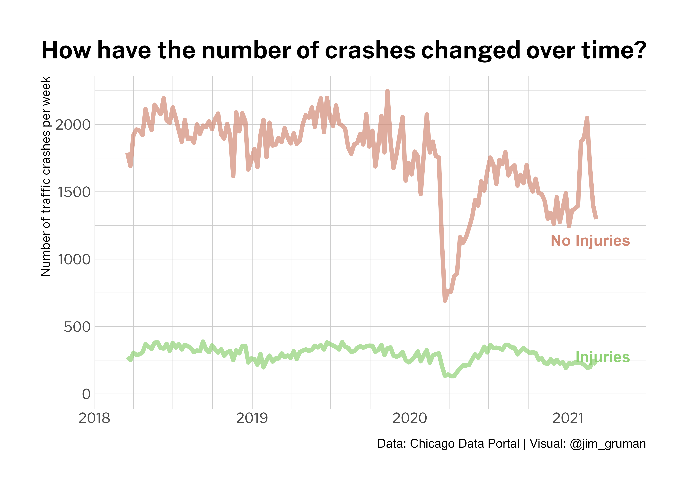
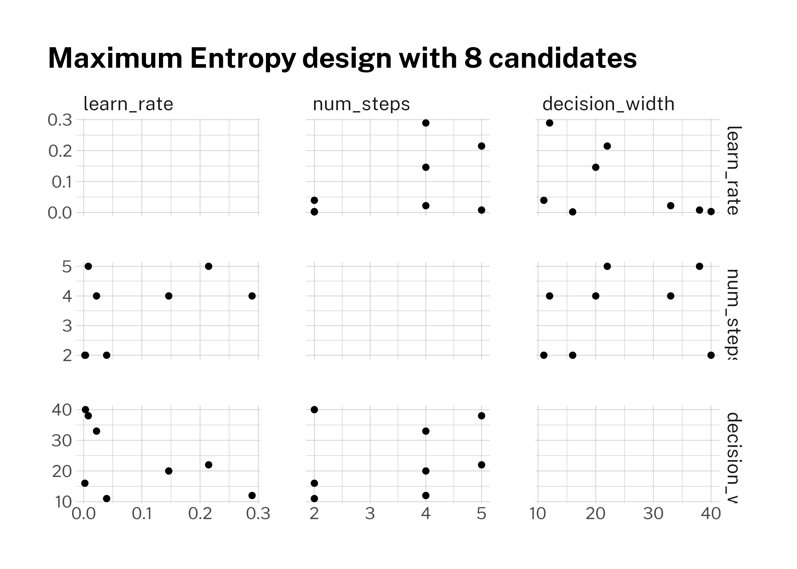
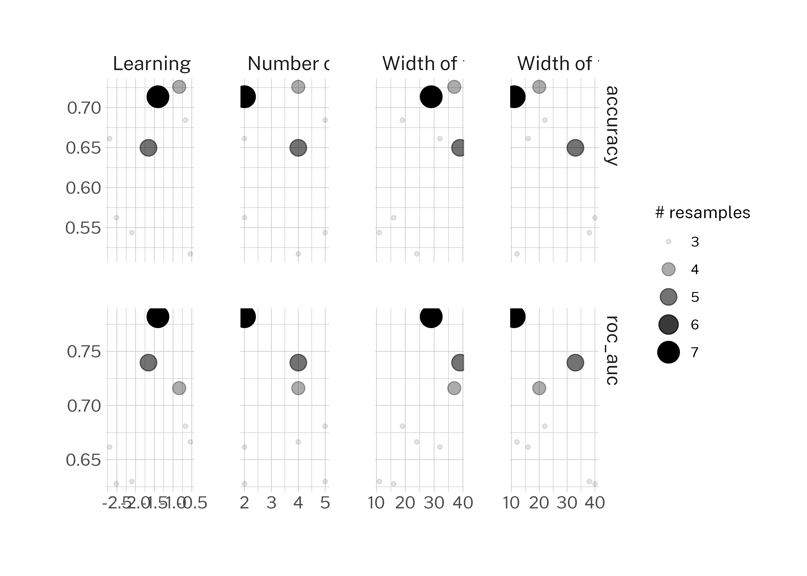
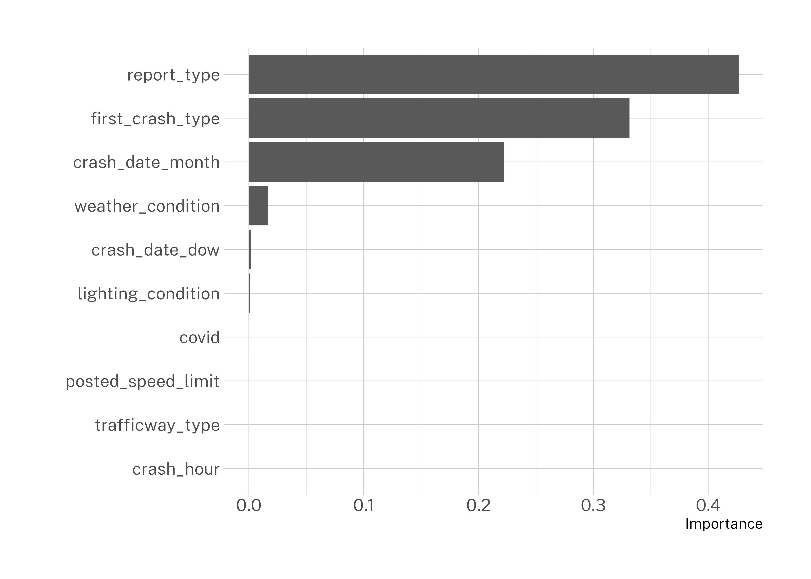
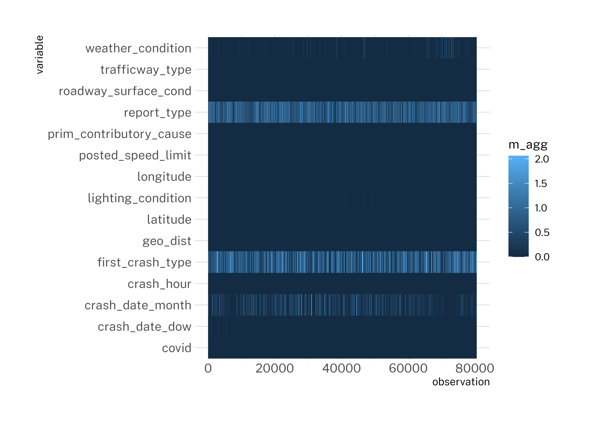
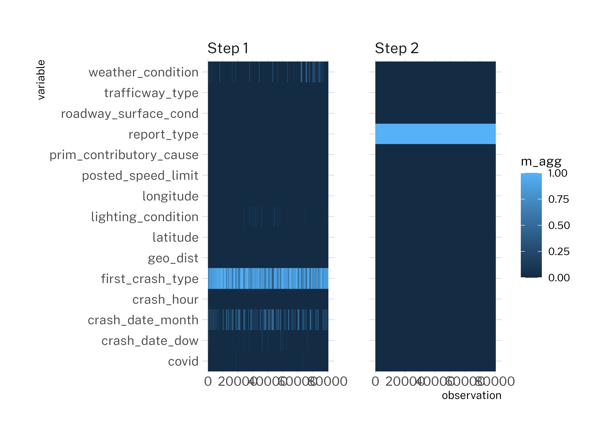

Last updated: 2021-03-15
Checks: 7 0
Knit directory: myTidyTuesday/
This reproducible R Markdown analysis was created with workflowr (version 1.6.2). The Checks tab describes the reproducibility checks that were applied when the results were created. The Past versions tab lists the development history.
Great! Since the R Markdown file has been committed to the Git repository, you know the exact version of the code that produced these results.
Great job! The global environment was empty. Objects defined in the global environment can affect the analysis in your R Markdown file in unknown ways. For reproduciblity it’s best to always run the code in an empty environment.
The command set.seed(20200907) was run prior to running the code in the R Markdown file. Setting a seed ensures that any results that rely on randomness, e.g. subsampling or permutations, are reproducible.
Great job! Recording the operating system, R version, and package versions is critical for reproducibility.
Nice! There were no cached chunks for this analysis, so you can be confident that you successfully produced the results during this run.
Great job! Using relative paths to the files within your workflowr project makes it easier to run your code on other machines.
Great! You are using Git for version control. Tracking code development and connecting the code version to the results is critical for reproducibility.
The results in this page were generated with repository version 097f9c9. See the Past versions tab to see a history of the changes made to the R Markdown and HTML files.
Note that you need to be careful to ensure that all relevant files for the analysis have been committed to Git prior to generating the results (you can use wflow_publish or wflow_git_commit). workflowr only checks the R Markdown file, but you know if there are other scripts or data files that it depends on. Below is the status of the Git repository when the results were generated:
Ignored files:
Ignored: .Rhistory
Ignored: .Rproj.user/
Ignored: analysis/rsconnect/
Ignored: data/03/
Ignored: data/lab_51_torch_tabnet/
Ignored: fonts/
Ignored: rosm.cache/
Untracked files:
Untracked: analysis/.vscode/
Untracked: animation.gif
Untracked: figure/
Unstaged changes:
Modified: analysis/BackboneWatershed.Rmd
Note that any generated files, e.g. HTML, png, CSS, etc., are not included in this status report because it is ok for generated content to have uncommitted changes.
These are the previous versions of the repository in which changes were made to the R Markdown (analysis/2021_02_09_tidy_tuesday.Rmd) and HTML (docs/2021_02_09_tidy_tuesday.html) files. If you’ve configured a remote Git repository (see ?wflow_git_remote), click on the hyperlinks in the table below to view the files as they were in that past version.
| File | Version | Author | Date | Message |
|---|---|---|---|---|
| Rmd | 097f9c9 | opus1993 | 2021-03-15 | wflow_publish(“analysis/2021_02_09_tidy_tuesday.Rmd”) |
| Rmd | 8a17cc0 | opus1993 | 2021-02-17 | workflowr::wflow_publish(“analysis/2021_02_09_tidy_tuesday.Rmd”) |
| Rmd | 199faa2 | opus1993 | 2021-02-16 | init commit on home pc |
I am going to make a departure from the TidyTuesday script this week to explore a Sigrid Keydana article posted at the R-Studio AI Blog as “torch, tidymodels, and high-energy physics,” where they introduce tabnet, a torch implementation of the paper “TabNet: Attentive Interpretable Tabular Learning” that is fully integrated with the tidymodels machine learning framework.
knitr::include_url("https://blogs.rstudio.com/ai/posts/2021-02-11-tabnet/")For my demonstration, I am going revisit the wild-caught Chicago traffic crashes dataset that I explored back in January.
What caught my eye in Sigrid’s post was the claim that TabNet includes interpretability features by design. Let’s give it a try here. First, let’s load package libraries to make the deep learning functions available.
knitr::opts_chunk$set(
echo = TRUE,
message = FALSE,
warning = FALSE,
cache = FALSE,
cache.lazy = FALSE,
df_print = "paged",
dpi = 300,
tidy = "styler",
dev = "ragg_png"
)
suppressPackageStartupMessages({
library(tidyverse)
library(torch)
library(tabnet)
library(tidymodels)
library(themis)
library(vip)
library(finetune)
library(RSocrata)
library(rlang)
library(vctrs)
library(lubridate)
library(hrbrthemes)
library(systemfonts)
})Warning: package 'tibble' was built under R version 4.0.4Warning: package 'tidyr' was built under R version 4.0.4Warning: package 'dplyr' was built under R version 4.0.4Warning: package 'broom' was built under R version 4.0.4Warning: package 'rsample' was built under R version 4.0.4Warning: package 'tune' was built under R version 4.0.4Warning: package 'workflows' was built under R version 4.0.4Warning: package 'lubridate' was built under R version 4.0.4ggplot2::theme_set(hrbrthemes::theme_ipsum_pub() +
ggplot2::theme(plot.title.position = "plot",
plot.caption.position = "plot"))I’ve invested some time and effort into making GPU compute available on my Windows laptop.
cuda_device_count()[1] 1torch_get_num_interop_threads()[1] 6torch_get_num_threads()[1] 12We will load the latest data directly from the Chicago data portal. This dataset covers traffic crashes on city streets within Chicago city limits under the jurisdiction of the Chicago Police Department. The objective here is to predict the crashes that result in injuries.
years_ago <- today() - years(3)
crash_url <- glue::glue("https://data.cityofchicago.org/Transportation/Traffic-Crashes-Crashes/85ca-t3if?$where=CRASH_DATE > '{years_ago}'")
crash <- as_tibble(read.socrata(crash_url)) %>%
arrange(desc(crash_date)) %>%
transmute(
injuries = factor(if_else(injuries_total > 0, TRUE, FALSE)),
crash_date,
crash_hour = factor(crash_hour),
report_type = if_else(report_type == "", "UNKNOWN", report_type),
# num_units,
trafficway_type,
posted_speed_limit = factor(posted_speed_limit),
weather_condition,
lighting_condition,
roadway_surface_cond,
first_crash_type,
trafficway_type,
prim_contributory_cause,
latitude, longitude,
covid = factor(if_else(between(date(crash_date), date("2020-03-01"), date("2020-06-01")), TRUE, FALSE))
) %>%
na.omit() %>%
arrange(crash_date)
Warning: The above code chunk cached its results, but it won’t be re-run if previous chunks it depends on are updated. If you need to use caching, it is highly recommended to also set knitr::opts_chunk$set(autodep = TRUE) at the top of the file (in a chunk that is not cached). Alternatively, you can customize the option dependson for each individual chunk that is cached. Using either autodep or dependson will remove this warning. See the knitr cache options for more details.
I’ve added a logical feature associated with the COVID pandemic timeframe. Let’s take a glimpse of the dataset with skim:
skimr::skim(crash)| Name | crash |
| Number of rows | 322020 |
| Number of columns | 14 |
| _______________________ | |
| Column type frequency: | |
| character | 7 |
| factor | 4 |
| numeric | 2 |
| POSIXct | 1 |
| ________________________ | |
| Group variables | None |
Variable type: character
| skim_variable | n_missing | complete_rate | min | max | empty | n_unique | whitespace |
|---|---|---|---|---|---|---|---|
| report_type | 0 | 1 | 7 | 26 | 0 | 3 | 0 |
| trafficway_type | 0 | 1 | 4 | 31 | 0 | 20 | 0 |
| weather_condition | 0 | 1 | 4 | 24 | 0 | 12 | 0 |
| lighting_condition | 0 | 1 | 4 | 22 | 0 | 6 | 0 |
| roadway_surface_cond | 0 | 1 | 3 | 15 | 0 | 7 | 0 |
| first_crash_type | 0 | 1 | 5 | 28 | 0 | 18 | 0 |
| prim_contributory_cause | 0 | 1 | 6 | 80 | 0 | 40 | 0 |
Variable type: factor
| skim_variable | n_missing | complete_rate | ordered | n_unique | top_counts |
|---|---|---|---|---|---|
| injuries | 0 | 1 | FALSE | 2 | FAL: 275817, TRU: 46203 |
| crash_hour | 0 | 1 | FALSE | 24 | 16: 24499, 17: 24127, 15: 24065, 14: 21685 |
| posted_speed_limit | 0 | 1 | FALSE | 36 | 30: 237297, 35: 22601, 25: 20010, 20: 12896 |
| covid | 0 | 1 | FALSE | 2 | FAL: 304300, TRU: 17720 |
Variable type: numeric
| skim_variable | n_missing | complete_rate | mean | sd | p0 | p25 | p50 | p75 | p100 | hist |
|---|---|---|---|---|---|---|---|---|---|---|
| latitude | 0 | 1 | 41.86 | 0.32 | 0.00 | 41.78 | 41.88 | 41.92 | 42.02 | ▁▁▁▁▇ |
| longitude | 0 | 1 | -87.67 | 0.66 | -87.93 | -87.72 | -87.67 | -87.63 | 0.00 | ▇▁▁▁▁ |
Variable type: POSIXct
| skim_variable | n_missing | complete_rate | min | max | median | n_unique |
|---|---|---|---|---|---|---|
| crash_date | 0 | 1 | 2018-03-15 00:01:00 | 2021-03-15 00:05:00 | 2019-07-22 14:20:30 | 208591 |
crash %>%
mutate(crash_date = as_date(floor_date(crash_date, unit = "week"))) %>%
count(crash_date, injuries) %>%
filter(
crash_date != last(crash_date),
crash_date != first(crash_date)
) %>%
mutate(name_lab = if_else(
crash_date == last(crash_date),
as.logical(injuries),
NA
)) %>%
ggplot() +
geom_line(aes(as.Date(crash_date), n, color = injuries),
size = 1.5,
alpha = 0.7
) +
scale_x_date(
labels = scales::date_format("%Y"),
expand = c(0, 0),
breaks = seq.Date(as_date("2018-01-01"),
as_date("2021-01-01"),
by = "year"
),
minor_breaks = "3 months",
limits = c(as_date("2018-01-01"), as_date("2021-07-01"))
) +
ggrepel::geom_text_repel(
data = . %>% filter(!is.na(name_lab)),
aes(
x = crash_date + 1,
y = n - 50,
label = if_else(name_lab, "Injuries", "No Injuries"),
color = injuries
),
fontface = "bold",
size = 4,
direction = "y",
xlim = c(2022, NA),
hjust = 0,
segment.size = .7,
segment.alpha = .5,
segment.linetype = "dotted",
box.padding = .4,
segment.curvature = -0.1,
segment.ncp = 3,
segment.angle = 20
) +
scale_y_continuous(limits = (c(0, NA))) +
hrbrthemes::scale_color_ipsum() +
labs(
title = "How have the number of crashes changed over time?",
x = NULL,
y = "Number of traffic crashes per week",
color = "Injuries?",
caption = "Data: Chicago Data Portal | Visual: @jim_gruman"
) +
theme(legend.position = "")
This is not a balanced dataset, in that the injuries are a small portion of traffic incidents. The proportion changes over time. For the entire 3 year dataset, the portion of crashes with injuries is:
prop.table(table(crash$injuries == TRUE))
FALSE TRUE
0.8565213 0.1434787 Let’s split the data and create cross-validation folds from the training set. Here we’ll use an expanding monthly window by setting lookback = Inf, and each assessment set will contain two months of data. To ensure that we have enough data to fit our models, we’ll skip the first 14 expanding windows. Finally, to thin out the results, we’ll step forward by 2 between each resample. This yields 10 cross validation folds.
crash_split <- initial_time_split(crash,
strata = injuries,
prop = 3 / 4
)
crash_train <- training(crash_split)
crash_test <- testing(crash_split)
## Time-based Resampling first breaks up the crash_dates into monthly groups, and then uses that to construct the resampling indices. We expect that each trained model should be assessed by the next two months. To ensure that we have enough data to fit our models, we'll `skip` the first 4 expanding windows. Finally, to thin out the results, we'll `step` forward by 3 between each resample.
crash_folds <- sliding_period(crash_train,
index = crash_date,
period = "month",
lookback = Inf,
assess_stop = 2,
skip = 4,
step = 3
)
crash_foldsThen we will feature engineer a recipe, which includes creating date features such as day of the week, handling the high cardinality of weather conditions, contributing cause, etc, and perhaps most importantly, downsampling to account for the class imbalance.
crash_rec <- recipe(injuries ~ ., data = crash_train) %>%
step_date(crash_date,
features = c("dow", "month")
) %>%
step_rm(crash_date) %>%
step_geodist(
lat = latitude,
lon = longitude,
ref_lat = 41.887846,
ref_lon = -87.620649
) %>%
step_other(
weather_condition,
first_crash_type,
trafficway_type,
crash_hour,
trafficway_type,
prim_contributory_cause,
other = "OTHER"
) %>%
step_normalize(all_numeric()) %>%
themis::step_downsample(injuries)Next, we will create a parsnip model specification of class tabnet.
mod <- tabnet(epochs = 3) %>%
set_engine("torch", verbose = TRUE) %>%
set_mode("classification")Next, lets bundle the recipe and model into a workflow for training
wf <- workflow() %>%
add_model(mod) %>%
add_recipe(crash_rec)Next, train the model. This takes about 4 minutes with the GPU.
t0 <- Sys.time()
fitted_model <- wf %>% fit(data = crash_train)
t1 <- Sys.time() - t0
t1Time difference of 3.43057 mins
Warning: The above code chunk cached its results, but it won’t be re-run if previous chunks it depends on are updated. If you need to use caching, it is highly recommended to also set knitr::opts_chunk$set(autodep = TRUE) at the top of the file (in a chunk that is not cached). Alternatively, you can customize the option dependson for each individual chunk that is cached. Using either autodep or dependson will remove this warning. See the knitr cache options for more details.
For this generic, untuned model, let’s ask the model for test-set predictions and compute its performance metrics.
metrics <- metric_set(accuracy, precision, recall)
bind_cols(crash_test, predict(fitted_model, crash_test)) %>%
metrics(injuries, estimate = .pred_class)Unfortunately, the accuracy of the model on test data is worse than the 85% that would have been arrived at with no model at all on the imbalanced data set.
Let’s see how much we can improve with some hyperparameter tuning.
For hyperparameter tuning, the tidymodels framework makes use of cross-validation. With a dataset of considerable size, some time and patience is needed; for the purpose of this post, we will use 1/1,000 of the observations.
Changes to the above workflow start at model specification. Let’s say we’ll leave most settings fixed, but vary the TabNet-specific hyperparameters decision_width, attention_width, and num_steps, as well as the learning rate:
mod <- tabnet(
epochs = 3,
decision_width = tune(),
attention_width = tune(),
num_steps = tune(),
learn_rate = tune()
) %>%
set_engine("torch", verbose = TRUE) %>%
set_mode("classification")The workflow is the same as before:
wf <- workflow() %>%
add_model(mod) %>%
add_recipe(crash_rec)Next, we specify the hyperparameter ranges we’re interested in, and call one of the grid construction functions from the dials package to build one for us.
grid <- wf %>%
parameters() %>%
update(
decision_width = decision_width(range = c(10, 40)),
attention_width = attention_width(range = c(10, 40)),
num_steps = num_steps(range = c(2, 5)),
learn_rate = learn_rate(
range = c(-3, -0.4),
trans = log10_trans()
)
) %>%
grid_max_entropy(size = 8)
grid %>%
ggplot(aes(x = .panel_x, y = .panel_y)) +
geom_point() +
geom_blank() +
ggforce::facet_matrix(vars(learn_rate, num_steps, decision_width, learn_rate), layer.diag = 2) +
labs(title = "Maximum Entropy design with 8 candidates")
To search the space, we use tune_race_anova() from the new finetune package, making use of cross-validation. Expect the ten folds on 8 grid points to run for several hours.
ctrl <- control_race(verbose_elim = TRUE)
crash_tune_result <- wf %>%
tune_race_anova(
resamples = crash_folds,
grid = grid,
control = ctrl
)
Warning: The above code chunk cached its results, but it won’t be re-run if previous chunks it depends on are updated. If you need to use caching, it is highly recommended to also set knitr::opts_chunk$set(autodep = TRUE) at the top of the file (in a chunk that is not cached). Alternatively, you can customize the option dependson for each individual chunk that is cached. Using either autodep or dependson will remove this warning. See the knitr cache options for more details.
Let’s have a look at the accuracy and area under the curve at the settings for tuned hyperparameters for each of the resamples:
crash_tune_result %>%
autoplot()
We can now extract the best hyperparameter combinations for each position on the grid:
crash_tune_result %>%
show_best("roc_auc") %>%
select(-c(.estimator, .config))Let’s re-fit the final best tuned model on the training dataset and collect the overall metrics.
best_params <- select_best(crash_tune_result,
metric = "roc_auc"
)
final_mod <- tabnet(
epochs = 3,
decision_width = best_params$decision_width,
attention_width = best_params$attention_width,
num_steps = best_params$num_steps,
learn_rate = best_params$learn_rate
) %>%
set_engine("torch", verbose = TRUE) %>%
set_mode("classification")
wf <- workflow() %>%
add_model(final_mod) %>%
add_recipe(crash_rec)
crash_fit <- wf %>% fit(data = crash_train)
bind_cols(crash_test, predict(crash_fit, crash_test)) %>%
metrics(injuries, estimate = .pred_class)bind_cols(crash_test, predict(crash_fit, crash_test, type = "prob")) %>%
roc_auc(injuries, .pred_TRUE)Not a great model, but given that this is wild-caught data, it’s not a surprise either.
Now let’s inspect TabNet’s interpretability features. TabNet’s most prominent characteristic is the way – inspired by decision trees – it executes in distinct steps. At each step, it again looks at the original input features, and decides which of those to consider based on lessons learned in prior steps. Concretely, it uses an attention mechanism to learn sparse masks which are then applied to the features.
Now, these masks being “just” model weights means we can extract them and draw conclusions about feature importance. Depending on how we proceed, we can either
aggregate mask weights over steps, resulting in global per-feature importance;
run the model on a few test samples and aggregate over steps, resulting in observation-wise feature importance; or
run the model on a few test samples and extract individual weights.
With tabnet, vip::vip is able to display feature importance directly from the parsnip model:
fit <- pull_workflow_fit(crash_fit)
vip(fit)
Now that was super simple. The feature importance metrics are slightly different than the rpart method presented here.
Due to the way TabNet enforces sparsity, we see that many features have not been made use of:
ex_fit <- tabnet_explain(fit$fit, prep(crash_rec) %>% bake(crash_test))
ex_fit$M_explain %>%
mutate(observation = row_number()) %>%
pivot_longer(-observation, names_to = "variable", values_to = "m_agg") %>%
ggplot(aes(x = observation, y = variable, fill = m_agg)) +
geom_tile()
Finally and on the same selection of observations, we again inspect the masks, but this time, per decision step:
ex_fit$masks %>%
imap_dfr(~ mutate(
.x,
step = sprintf("Step %d", .y),
observation = row_number()
)) %>%
pivot_longer(-c(observation, step), names_to = "variable", values_to = "m_agg") %>%
ggplot(aes(x = observation, y = variable, fill = m_agg)) +
geom_tile() +
theme(axis.text = element_text(size = 5)) +
facet_wrap(~step)
We clearly see how TabNet makes use of different features at different times. So what do we make of this? It depends. Given the enormous societal importance of this topic – call it interpretability, explainability, or whatever – let’s finish this post with a short discussion.
An internet search for “interpretable vs. explainable ML” immediately turns up a number of sites confidently stating “interpretable ML is …” and “explainable ML is …”, as though there were no arbitrariness in the definitions. Going deeper, you find articles such as Cynthia Rudin’s “Stop Explaining Black Box Machine Learning Models for High Stakes Decisions and Use Interpretable Models Instead” (Rudin (2018)) that present us with a clear-cut, deliberate, instrumentalizable distinction that can actually be used in real-world scenarios.
In a nutshell, what she decides to call explainability is: approximate a black-box model by a simpler (e.g., linear) model and, starting from the simple model, make inferences about how the black-box model works. One of the examples she gives for how this could fail is striking:
Even an explanation model that performs almost identically to a black box model might use completely different features, and is thus not faithful to the computation of the black box. Consider a black box model for criminal recidivism prediction, where the goal is to predict whether someone will be arrested within a certain time after being released from jail/prison. Most recidivism prediction models depend explicitly on age and criminal history, but do not explicitly depend on race. Since criminal history and age are correlated with race in all of our datasets, a fairly accurate explanation model could construct a rule such as “This person is predicted to be arrested because they are black.” This might be an accurate explanation model since it correctly mimics the predictions of the original model, but it would not be faithful to what the original model computes.
What she calls interpretability, in contrast, is deeply related to domain knowledge:
Interpretability is a domain-specific notion […] Usually, however, an interpretable machine learning model is constrained in model form so that it is either useful to someone, or obeys structural knowledge of the domain, such as monotonicity [e.g.,8], causality, structural (generative) constraints, additivity [9], or physical constraints that come from domain knowledge. Often for structured data, sparsity is a useful measure of interpretability […]. Sparse models allow a view of how variables interact jointly rather than individually. […] e.g., in some domains, sparsity is useful,and in others is it not.
If we accept these well-thought-out definitions, what can we say about TabNet? Is looking at attention masks more like constructing a post-hoc model or more like having domain knowledge incorporated? Rudin might argue the former, since
the image-classification example she uses to point out weaknesses of explainability techniques employs saliency maps, a technical device comparable, in some ontological sense, to attention masks;
the sparsity enforced by TabNet is a technical, not a domain-related constraint;
we only know what features were used by TabNet, not how it used them.
On the other hand, one could disagree with Rudin. Do explanations have to be modeled after human cognition to be considered valid?
From a post by Keith O’Rourke on the topic of interpretability:
As with any critically-thinking inquirer, the views behind these deliberations are always subject to rethinking and revision at any time.
In any case, we can be sure that this topic’s importance will only grow with time. In the very early days of the GDPR (the EU General Data Protection Regulation) it was said that Article 22 (on automated decision-making) would have significant impact on how ML is used, unfortunately the current view seems to be that the wording is still too vague to have immediate consequences.
sessionInfo()R version 4.0.3 (2020-10-10)
Platform: x86_64-w64-mingw32/x64 (64-bit)
Running under: Windows 10 x64 (build 19042)
Matrix products: default
Random number generation:
RNG: L'Ecuyer-CMRG
Normal: Inversion
Sample: Rejection
locale:
[1] LC_COLLATE=English_United States.1252
[2] LC_CTYPE=English_United States.1252
[3] LC_MONETARY=English_United States.1252
[4] LC_NUMERIC=C
[5] LC_TIME=English_United States.1252
attached base packages:
[1] stats graphics grDevices utils datasets methods base
other attached packages:
[1] systemfonts_1.0.1 hrbrthemes_0.8.6 lubridate_1.7.10 vctrs_0.3.6
[5] rlang_0.4.10 RSocrata_1.7.10-6 finetune_0.0.1 vip_0.3.2
[9] themis_0.1.3 yardstick_0.0.7 workflows_0.2.2 tune_0.1.3
[13] rsample_0.0.9 recipes_0.1.15 parsnip_0.1.5 modeldata_0.1.0
[17] infer_0.5.4 dials_0.0.9 scales_1.1.1 broom_0.7.5
[21] tidymodels_0.1.2 tabnet_0.1.0.9000 torch_0.2.1.9000 forcats_0.5.1
[25] stringr_1.4.0 dplyr_1.0.5 purrr_0.3.4 readr_1.4.0
[29] tidyr_1.1.3 tibble_3.1.0 ggplot2_3.3.3 tidyverse_1.3.0
[33] workflowr_1.6.2
loaded via a namespace (and not attached):
[1] utf8_1.1.4 R.utils_2.10.1 lme4_1.1-26
[4] tidyselect_1.1.0 grid_4.0.3 pROC_1.17.0.1
[7] munsell_0.5.0 codetools_0.2-18 ragg_1.1.1
[10] statmod_1.4.35 future_1.21.0 withr_2.4.1
[13] colorspace_2.0-0 highr_0.8 knitr_1.31
[16] rstudioapi_0.13 Rttf2pt1_1.3.8 listenv_0.8.0
[19] labeling_0.4.2 git2r_0.28.0 repr_1.1.3
[22] polyclip_1.10-0 bit64_4.0.5 DiceDesign_1.9
[25] farver_2.1.0 rprojroot_2.0.2 mlr_2.19.0
[28] parallelly_1.24.0 generics_0.1.0 ipred_0.9-11
[31] xfun_0.22 R6_2.5.0 doParallel_1.0.16
[34] lhs_1.1.1 assertthat_0.2.1 promises_1.2.0.1
[37] nnet_7.3-15 debugme_1.1.0 gtable_0.3.0
[40] globals_0.14.0 processx_3.4.5 timeDate_3043.102
[43] BBmisc_1.11 splines_4.0.3 extrafontdb_1.0
[46] checkmate_2.0.0 yaml_2.2.1 modelr_0.1.8
[49] backports_1.2.1 httpuv_1.5.5 extrafont_0.17
[52] tools_4.0.3 lava_1.6.9 ellipsis_0.3.1
[55] jquerylib_0.1.3 Rcpp_1.0.6 plyr_1.8.6
[58] base64enc_0.1-3 progress_1.2.2 parallelMap_1.5.0
[61] ps_1.6.0 prettyunits_1.1.1 rpart_4.1-15
[64] slider_0.1.5 ParamHelpers_1.14 haven_2.3.1
[67] ggrepel_0.9.1 fs_1.5.0 furrr_0.2.2
[70] unbalanced_2.0 magrittr_2.0.1 data.table_1.14.0
[73] warp_0.2.0 reprex_1.0.0 RANN_2.6.1
[76] GPfit_1.0-8 whisker_0.4 ROSE_0.0-3
[79] R.cache_0.14.0 hms_1.0.0 mime_0.10
[82] evaluate_0.14 readxl_1.3.1 gridExtra_2.3
[85] compiler_4.0.3 crayon_1.4.1 minqa_1.2.4
[88] coro_1.0.1 R.oo_1.24.0 htmltools_0.5.1.1
[91] later_1.1.0.1 DBI_1.1.1 tweenr_1.0.1
[94] dbplyr_2.1.0 MASS_7.3-53.1 boot_1.3-27
[97] Matrix_1.3-2 cli_2.3.1 R.methodsS3_1.8.1
[100] parallel_4.0.3 gower_0.2.2 pkgconfig_2.0.3
[103] skimr_2.1.3 xml2_1.3.2 foreach_1.5.1
[106] memuse_4.1-0 bslib_0.2.4 hardhat_0.1.5
[109] prodlim_2019.11.13 rvest_1.0.0 callr_3.5.1
[112] digest_0.6.27 rmarkdown_2.7 cellranger_1.1.0
[115] fastmatch_1.1-0 gdtools_0.2.3 curl_4.3
[118] nloptr_1.2.2.2 nlme_3.1-152 lifecycle_1.0.0
[121] jsonlite_1.7.2 fansi_0.4.2 pillar_1.5.1
[124] lattice_0.20-41 httr_1.4.2 survival_3.2-9
[127] glue_1.4.2 FNN_1.1.3 iterators_1.0.13
[130] bit_4.0.4 ggforce_0.3.3 class_7.3-18
[133] stringi_1.5.3 sass_0.3.1 rematch2_2.1.2
[136] textshaping_0.3.2 styler_1.3.2